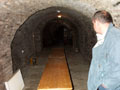
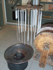

Dunaföldváron, útban Szekszárd felé...
Szekszárd buszpályaudvarán leszállva elsõként egy cigánysuhancba ütköztünk, aki óbégatva dicsekedett a haverjainak, hogy hogyan rabolt ki valami csávót. De más érdekességek is szaladgáltak itt.
A hely
A váróterem audiovizuális szórakoztatóegysége
Ez a hely arról nevezetes, hogy amikor legutóbb bementem, és megkérdeztem, tudnának-e vegetáriánus pizzát adni, a fószer kicsit gondolkodott, majd kibökte, hogy "esetleg tehetek rá uborkát."
Street art
Utunk a cigánynegyeden vezetett keresztül. Az igazi dzsumbujt nemrég felszámolták, de azért akadt még néznivaló bõven.
Ház
Jómunkásember kerítést fest
Na, itt a kert
Biznisz

Másik ház
Felmentünk a híres szekszárdi szõlõhegyek egyikére
Ilyen volt fentrõl
Ide jöttünk. Fekete úr híres borász, mindenféle díjakat nyer országos borversenyeken.
Évszázados présház

Athina fényképez
Ezt fényképezi
A présház elõterében lehetett iddogálni

Lementünk a pincébe
Fekete úr bora
Lefejtett, palackozásra való bor
Mendegéltünk lefelé
Tölgyfahordók
Fekete úr megmutatta, milyen volt régen egy pince, amit még nem tégláztak ki, csak a löszfalba vájták
Doom 4.
Doom 5.
Látogatásunk végeztével Fekete úr megvendégelt bennünket egy üveg díjnyertes 2004-es Rosé Cuvée borra
A bor diplomája

A borpince után meglátogattuk a szocialista emlékmûipar remekét a közeli hegyen. Ez az emlékmû arról nevezetes, hogy baromi drága volt, és baromira utálják a helyiek. Érdekes ötlet például a szõlõmotívumokat búzakalásszal egyesíteni. Ám a legérdekesebb még mindig az, hogy annak idején a helyi tanácsi vezetõk belevésették saját neveiket a legalsó levelekbe.
Az építmény alulról. Kissé már omladozik, szerencsére nem akkor, amikor alatta álltunk.
Ezek nagy része a rendszerváltás óta eltûnt, de néhány még azért ott van. Vajon kik lehettek Tamás és Csuti?

Rozsdafarkú-fészek egy ház eresze alatt
A rozsdafarkú, aki kissé zokon vette, hogy szemrevételeztük otthonát
Õ pedig Merlin kutya, Berta helyi megfelelõje
Harapdálás
És most hirtelen, minden átmenet nélkül a Petrits család mézeskalács-múzeumában találjuk magunkat. Ezek a fadarabok egy gyertyaöntõ sablon darabjai a XIX. századból. Mellettük az öntés eredménye, Nagyboldogasszony.
A kakasos nyalóka már száz éve is létezett
A Petrits-õsök panteonja

Az üzlet száz éve
Petritséket minden rendszerben jómunkásembernek tartották. Ahogy a terméküket kóstolgattuk, meg elnéztük munkájukat a bemutató DVD-n, nem is csoda.
Száz éves mézeskalács-formák
Ez lesz belõlük
Egy láda termék
Meg még egy vitrinre való
Ezzel a géppel készítik a cukorkákat. A forró, gyurmaszerû cukormasszát ujjnyi szalaggá húzzák, és áthúzzák a két henger között. Így alakul ki a cukorka, az egyes szemek közt vékony hártyával, ami kihûlés után könnyen összetörik, és a cukorkaszemek szétesnek.
A hengerek. A mai embernek nem túl érdekes látvány, de gondoljunk bele, mi munka lehetett száz éve ezeket kézzel megcsinálni, mégpedig úgy, hogy a hengerpárok pontosan illeszkedjenek, köztük egy milliméter eltérés se legyen.
Ezek a szerszámok is mind kézzel készültek
Gyertyakészítõ szerkezet. A két hengerre felfûzik a kanócot, a középen levõ tálba pedig forró viaszt öntenek. Ezután a hengereken ide-oda tekerik a kanócot, ami folyamatosan át- és átcsúszik a forró viaszon, egyre vastagodva.
Ez a soklyukú tárcsa arra szolgál, hogy a felesleges viaszt lehúzza, és a gyertya megfelelõen kerek formát kapjon. Ha már a legnagyobb lyukon sem fér át, a még mindig meleg "viaszkötelet" egyenes asztallapon feldarabolják kis gyertyákká.

A gyertyakészítés másik eszköze a csurgató. A kerékre felakasztják a kanócdarabokat, és kanállal locsolják rájuk az olvadt viaszt, ami lefolyva kihûl és megtapad. Egy idõ után megfordítják, és az aljától kezdve is locsolják, hogy egyenletesebb legyen. Lassú módszer, de szép hosszú gyertyákat lehet vele csinálni.
Ez pedig itt a kemence
Búcsúzóul pedig egy panorámakép Szekszárdról, a szocialista szõlõfürtök alól fényképezve, Photoshoppal összebarkácsolva